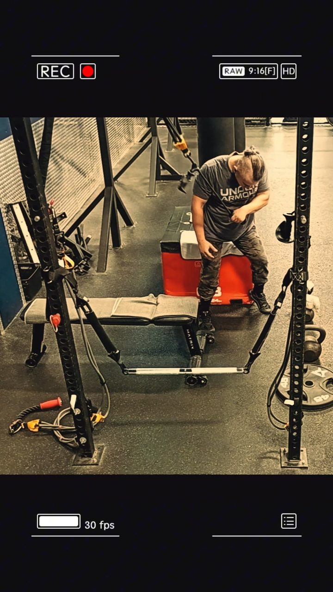

FIT PROTOCOL · V2.0Progression
9 · Planning over Months and Years
Chapter 9 - Planning over months and years
Quarterly review beats weekly overreaction.
Quarterly body-composition review is the project cadence. The timing and scope of blood testing follow
clinical need, not the training calendar. A few comparable weigh-ins describe a week; an isolated SMM or
body-fat reading should not trigger a new diet or supplement change.
Planning horizons: weekly (performance, sleep, digestion log), quarterly (standardized BIA trend, waist,
photos under consistent light), annually (full laboratory panel timed with the clinician, medication and
supplement reconciliation). Brand changes and label versions are logged with dates, because a product
name is not a formula guarantee.
Analysis 9A. Adaptation is slow and noisy. The planning system exists to prevent the most common
error in self-directed programmes: changing three variables after one noisy measurement and learning
nothing. One change, one review window, one decision.